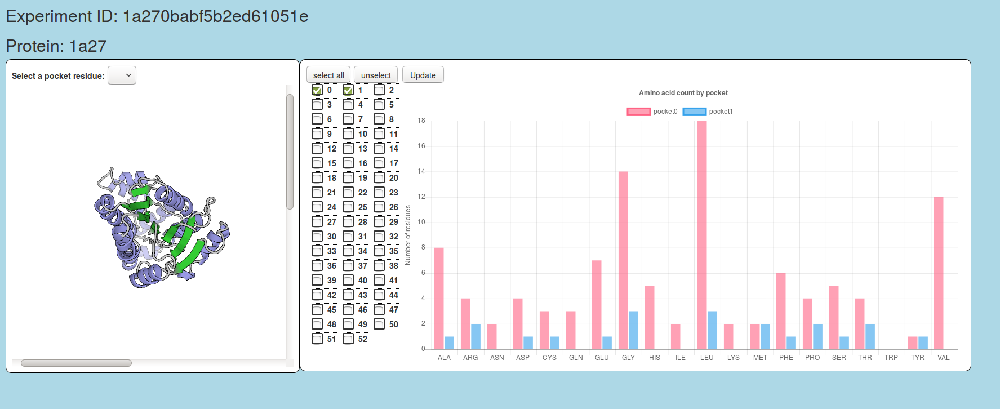

Here is a page that will help you see and guide you through all the things that you can do on Protein Cavity Explorer.
Table of Contents
To create an experiment simply input a valid PDBID. For example: "1a27"
Make sure to write down your ExperimentID so that you can come back to these results in a flash!
Make sure that the PID is:
- is on our list of proteins that we have data for
- Inputted Correctly(4 alpha-numeric letters and starts with a number)
- a Valid RCSB PBDID
- has a Chain A
If you are having trouble, try inputting in all lowercases or all uppercases.
From the results page, look to the left side of the results page.
The order of the pockets is by their area size. I.E: pocket 0 will always have the largest area and usually consist of the most residues.
Feel free to rotate the protein around by clicking and dragging. You can also zoom in and out by scrolling on top of the picture.
From the result page, look to the right(or bottom for smaller screens) side of the results page.
Click any one of the checkboxes for a bar graph to pull up.
Here you can compare the types of amino acids within the cavity you have selected.
If you hover over them...
From the result page, look to the right(or bottom for smaller screens) side of the results page.

Click 1 of the checkboxes for a bar graph to pull up.
Select any other checkbox so that 2 checkboxes are selected.
You can do this for any amount or select all the quickly pick all pockets.
Here you can compare the types of amino acids within the cavity you have selected.
The pockets are arranged by area size, with 0 being the largest.
To take this further, click more of the checkboxes and a new color of bar will join the graph representing the new pocket that you have selected.

To resume an experiment input the ExperimentID on the bottom input of the home page. For example: "1a270babf5b2ed61051e"
Unfortunantly if you lost your ExperimentID you will have to generate the experiment again.